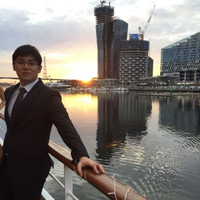

Visual Analytics Group Project
TenantThread: Embargo Breach Investigation
This project is based on Mini-Challenge 1 of VAST Challenge 2026.
TenantThread is a property technology company whose automated communication system released embargoed merger information before the official announcement deadline. The case focuses on Project HarborCrest, a confidential merger agreement between TenantThread and CivicLoom Realty Partners.
Through this project, we develop a visual analytics application to explore the communication patterns, agent behaviours, and key events leading up to the embargo breach.
For the detailed project objectives and proposed approach, please refer to the Proposal section.
About Us

Alvin Ong
Javier Phang
Michelle Chen
Our Mentor

Professor Kam Tin Seong
Associate Professor of Information Systems (Practice)
School of Computing and Information Systems, Singapore Management University